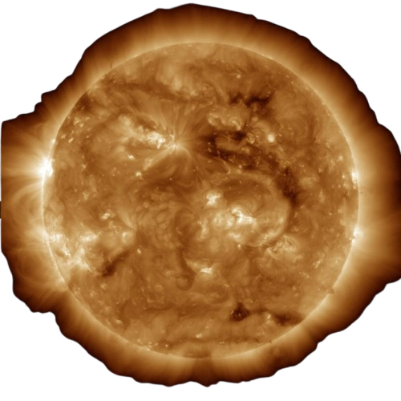
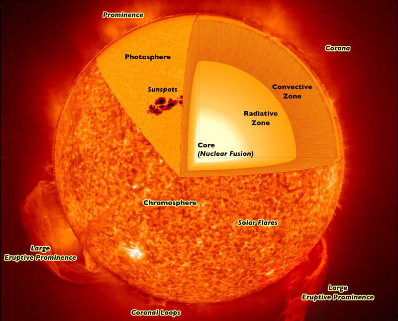
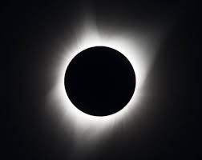
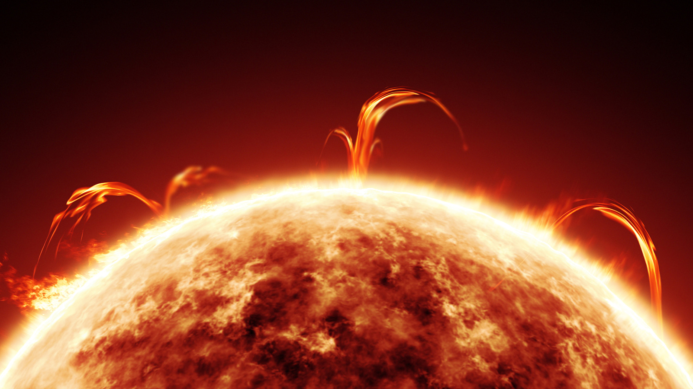

The Sun is a G-type main-sequence star (G2V Yellow Dwarf) that formed approximately 4.57 billion years ago. It contains about 99.86% of the Solar System's total mass and generates enormous amounts of energy through nuclear fusion in its core. Every planet, asteroid, comet, and moon orbits the Sun because of its immense gravitational pull.

The Sun's diameter is about 109 times larger than Earth's.
The Sun contains approximately 99.86% of the Solar System's total mass.
The visible surface (photosphere) averages about 5,500°C.
The Sun's core reaches temperatures of roughly 15 million degrees Celsius.
The Sun formed from a giant molecular cloud about 4.57 billion years ago.
Hydrogen nuclei fuse into helium, releasing enormous amounts of energy every second.
The Sun is the central star of our Solar System and the ultimate source of nearly all energy on Earth. Formed approximately 4.57 billion years ago from a collapsing cloud of gas and dust, it contains more than 99.86% of the Solar System's total mass. Through nuclear fusion in its core, the Sun converts hydrogen into helium, producing the immense heat and light that sustain life on Earth and drive the motion of every planet.
The Sun is composed of several distinct layers, each playing an important role in producing and transporting energy from the core into space.
The core reaches temperatures of nearly 15 million°C where hydrogen nuclei fuse into helium, producing enormous amounts of energy.
Energy slowly moves outward as photons repeatedly scatter through dense plasma. This journey can take hundreds of thousands of years.
Hot plasma rises while cooler plasma sinks, transporting energy to the Sun's visible surface.
The photosphere is the visible "surface" of the Sun. Although it appears solid, it is actually a thin layer of hot plasma approximately 500 km thick with an average temperature of about 5,500°C.
Approximately 5,500°C
Roughly 500 kilometers
Granules, faculae, and sunspots dominate the photosphere.
Located above the photosphere, the chromosphere glows with a reddish color during total solar eclipses. It contains towering jets of hot plasma known as spicules.
Deep reddish-pink during eclipses.
4,500°C to over 20,000°C
Thousands of plasma jets erupt every minute.
The corona is the Sun's extremely hot outer atmosphere extending millions of kilometers into space. Surprisingly, it is much hotter than the Sun's visible surface, reaching temperatures of more than one million degrees Celsius.
1–3 Million°C
Total Solar Eclipses
Scientists continue investigating why the corona is far hotter than the photosphere.
Every second, the Sun converts approximately 600 million tons of hydrogen into helium through nuclear fusion. A small portion of this mass becomes pure energy according to Einstein's equation E = mc², producing the sunlight and heat that power our Solar System.
≈600 Million Tons per Second
3.8 × 10²⁶ Watts
Proton-Proton Fusion Chain
The Sun continuously releases charged particles known as the solar wind. These particles travel throughout the Solar System, shaping planetary magnetospheres, creating auroras, and influencing space weather around Earth.
300–800 km/s
Electrons, Protons & Alpha Particles
Auroras, geomagnetic storms, and impacts on satellites and spacecraft.
Sunspots are temporary dark regions on the Sun's photosphere caused by intense magnetic activity. They appear darker because they are cooler than the surrounding surface, although they are still thousands of degrees Celsius. Sunspots often occur in groups and are closely linked to solar flares and coronal mass ejections.
Approximately 3,500–4,500°C, making them cooler than the surrounding photosphere.
Powerful magnetic fields suppress convection, reducing the flow of heat.
The number of sunspots rises and falls during the Sun's 11-year activity cycle.
Solar flares are sudden explosions of energy caused by the release of magnetic energy near sunspots. They emit intense radiation across the electromagnetic spectrum, including X-rays, ultraviolet light, and radio waves.
Equivalent to billions of hydrogen bombs exploding simultaneously.
Usually lasts from a few minutes to several hours.
Can disrupt satellites, GPS systems, radio communications, and electrical power grids on Earth.
A Coronal Mass Ejection is a massive eruption of plasma and magnetic fields from the Sun's corona. When directed toward Earth, CMEs can produce powerful geomagnetic storms capable of generating spectacular auroras and affecting modern technology.
300–3,000 km/s
Billions of tons of ionized plasma.
Typically reaches Earth within 1–3 days.
The Sun's magnetic field is generated by the movement of electrically charged plasma inside its interior. This magnetic field constantly changes, twists, and reconnects, driving solar activity throughout the Solar System.
Approximately 11 years.
The Sun's north and south magnetic poles reverse during each solar cycle.
Controls sunspots, flares, CMEs, and space weather throughout the Solar System.
The Sun makes life on Earth possible by providing light and heat. However, powerful solar storms can also interfere with satellites, communications, navigation systems, and electrical infrastructure.
Provides the energy that drives Earth's weather and climate systems.
Charged solar particles interacting with Earth's magnetic field create the Northern and Southern Lights.
Strong geomagnetic storms can affect satellites, astronauts, GPS, and power grids.
NASA's Parker Solar Probe is the fastest human-made object ever built. Launched in 2018, it repeatedly flies through the Sun's corona to study the origin of the solar wind, magnetic fields, and the heating of the corona.
August 12, 2018
NASA
More than 690,000 km/h, making it the fastest spacecraft ever built.
Study the Sun's outer atmosphere and improve our understanding of solar activity.
Galileo Galilei used a telescope to observe sunspots.
Helios spacecraft began studying the inner Solar System and the Sun.
SOHO was launched to continuously observe the Sun.
Solar Dynamics Observatory (SDO) began high-resolution observations.
Parker Solar Probe launched toward the Sun.
ESA's Solar Orbiter began studying the Sun's poles and magnetic activity.
The Sun contains 99.86% of the Solar System's total mass.
Every second, around 600 million tons of hydrogen are converted into helium.
Sunlight takes about 8 minutes and 20 seconds to travel from the Sun to Earth.
The Sun is expected to shine for about another 5 billion years before becoming a red giant.
Nearly every form of life on Earth ultimately depends on energy from the Sun.
The Parker Solar Probe is flying closer to the Sun than any spacecraft in history.
The Sun is the engine that powers the Solar System. Every planet, moon, asteroid, and comet is held in orbit by its enormous gravitational pull. Although it appears as an ordinary star among billions in the Milky Way, the Sun is extraordinary to humanity because it makes life on Earth possible. Without its continuous supply of light and heat, our planet would be a frozen world incapable of supporting oceans, weather, or living organisms.
Deep inside the Sun's core, hydrogen atoms are continuously fused into helium through nuclear fusion. This process converts a tiny amount of matter into enormous quantities of energy, following Einstein's famous equation E = mc². The energy produced in the core slowly travels outward through the radiative and convective zones before finally escaping from the photosphere as sunlight. The light reaching Earth today began its journey from the Sun's surface about 8 minutes ago, although the energy itself may have spent hundreds of thousands of years moving outward from the core.
The Sun is also an active magnetic star. Sunspots, solar flares, and coronal mass ejections constantly reshape its atmosphere and influence space weather throughout the Solar System. These powerful eruptions can create beautiful auroras on Earth while also disrupting satellites, communication systems, navigation networks, and electrical power grids. Understanding these events is one of the major goals of modern solar physics.
Modern missions such as NASA's Parker Solar Probe and ESA's Solar Orbiter are revolutionizing our understanding of the Sun. By flying closer than any spacecraft before, these missions are helping scientists explain why the corona is millions of degrees hotter than the visible surface, how the solar wind is accelerated, and how magnetic fields generate solar storms. Their discoveries not only deepen our understanding of our own star but also improve our knowledge of stars throughout the universe.
Representative scientific imagery from NASA, ESA, SOHO, SDO, Parker Solar Probe, and Solar Orbiter.

The photosphere showing sunspots and granulation.

The Sun's outer atmosphere visible during a total solar eclipse.

A massive eruption releasing tremendous energy into space.
The Sun is classified as a G2V main-sequence star, commonly called a Yellow Dwarf.
The Sun formed approximately 4.57 billion years ago and has enough hydrogen to continue shining for about another 5 billion years.
Nuclear fusion in the Sun's core converts hydrogen into helium, releasing enormous amounts of energy.
Sunlight travels from the Sun to Earth in approximately 8 minutes and 20 seconds.
No. The Sun is not massive enough to become a supernova. Instead, it will eventually become a red giant and later a white dwarf.
Understanding the Sun helps protect satellites, astronauts, communication systems, and electrical infrastructure from space weather.